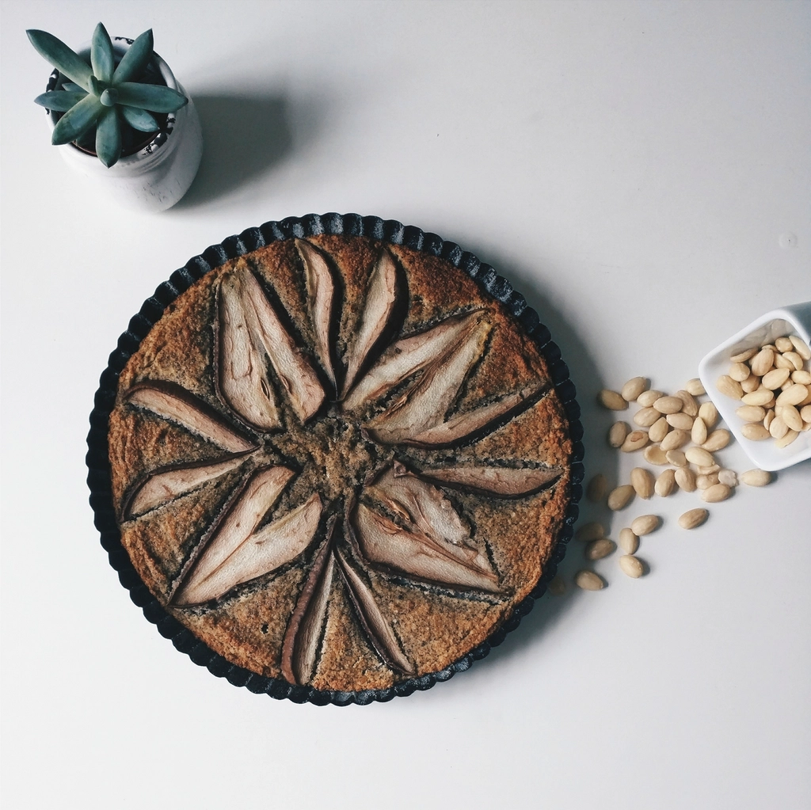

Nonpareil
The flagship California variety — light color and a smooth, attractive kernel, the benchmark for premium snacking and retail programs.
SnackingRetailPremium
California Almonds
We source California almonds based on customer requirements, applications, and market demand — from natural kernels to processed formats for food manufacturing.
Natural Almonds
Whole natural kernels with skin on, sourced from California's leading varieties for snacking, roasting, retail, and industrial programs.

The flagship California variety — light color and a smooth, attractive kernel, the benchmark for premium snacking and retail programs.
A widely planted modern variety with an appealing, versatile kernel — a dependable option for snacking and blanching alike.
A larger, elongated kernel and a dependable workhorse for industrial, ingredient, and manufacturing use.
A versatile kernel well suited to roasting, blanching, and a broad range of food-manufacturing applications.
A smaller, rounded Mission-type kernel — popular for snack mixes, roasting, and export markets where compact sizes are preferred.
A hardy Mission-type variety with a plump kernel and rich flavor — well suited to roasting, dicing, and processed applications.
Processed Almonds
Value-added almond formats prepared to commercial specifications for bakery, confectionery, dairy, and ingredient applications.
Whole kernels with skins removed — clean, ivory color for marzipan, confectionery, and premium bakery use.
Thin, uniform slices — natural or blanched — for bakery toppings, cereals, salads, and garnishes.
Julienne-cut blanched kernels — a classic format for baking, rice dishes, pilafs, and garnish.
Uniform pieces in a range of cut sizes — ideal for chocolate and candy inclusions, ice cream, and granola.
Finely ground blanched flour and natural meal — for gluten-free baking, macarons, coatings, and ingredient blends.
Other cuts, grades, and preparations can be evaluated according to your application and destination market.


Product selection is based on variety, grade, size, crop year, specifications, packaging, and intended application.
Specifications
Natural almond kernels are graded by count per ounce. The most commonly traded California sizes:
Different grades, varieties and specifications may be available depending on crop and market conditions.
Ready to Order?
Tell us your variety, size, volume, packaging, and destination — our team will respond with current availability and pricing.